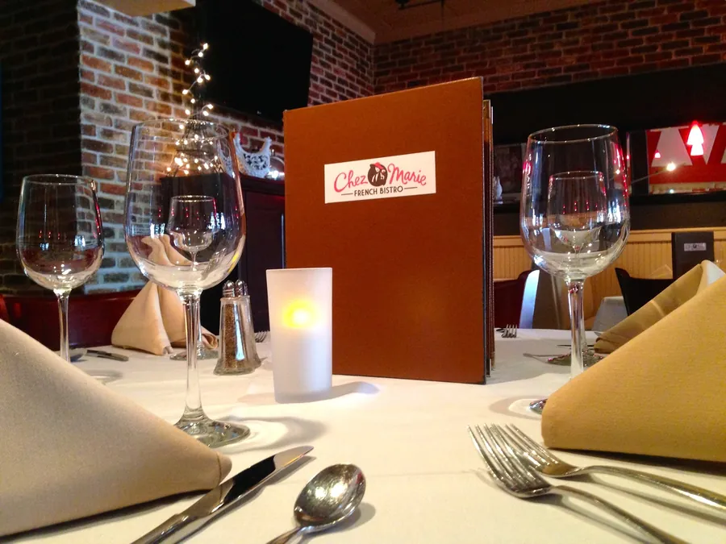

1. Chez Marie
Boca Raton · Polo Club Shoppes, Military Trl
Traditional French bistro · family-run, Lyon-trained chef
- Friday: 5:00–9:30 PM (last seating about 9)
- Drive: about 10–15 min from home in Boca, arrive about 6:15 PM
- Price: $$–$$$ · OpenTable "$31 to $50" · three-course prix fixe offered
- Rating: OpenTable 4.6★ (1,137)
White tablecloths, candlelight and a subdued little dining room that reviewers compare to a country bistro in France, plus a covered patio facing the courtyard fountain.
Why it fits you two
The best room of the three for a real conversation. Marie greets guests at the door and her husband, chef Stephane Gattacieca, trained at the Paul Bocuse Institute in Lyon. OpenTable diners give it 4.6 across more than 1,100 reviews, and recent ones say they could hear each other all night. The restaurant's listing adds live music on Fridays from 6 to 9 PM.
What to order
"We wanted to catch up, and we could actually hear! The decor is subdued but perfect, almost like a little place in the French countryside."OpenTable diner, Sept 2026 · 4.6★ (1,137)
Casual to smart casual. Free lot parking at the Polo Club Shoppes off Military Trail and Clint Moore Rd; look for the courtyard to the right of Publix. Reservations are recommended on weekends. 5030 Champion Blvd, Suite D3.
Photos: chezmariefrenchbistro.com